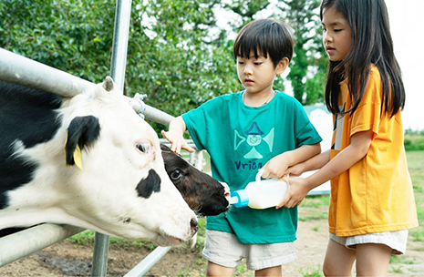
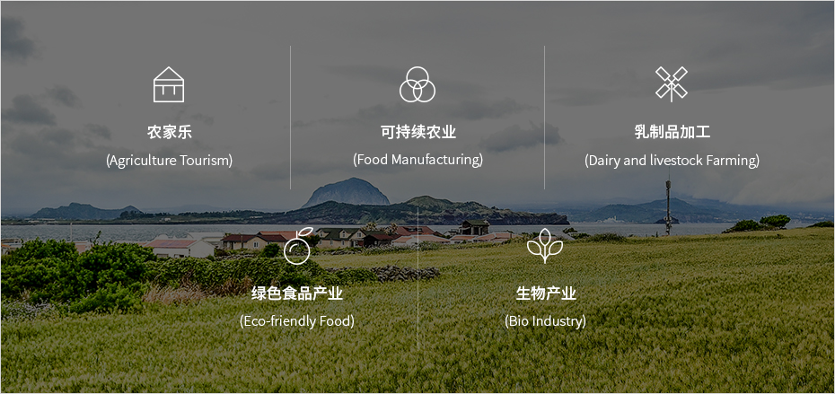

第一产业
- Home
- 投资环境
- 未来朝阳产业
- 第一产业
第一产业 (Primary Sector)


济州的清洁自然品牌在亚洲具有很高知名度，与世界级休养旅游产业相结合，让济州的第一产业具有可持续性，成为具有丰富潜在价值的未来朝阳产业。
济州火山岛位于韩国最南端，利用丰富的农业、海洋、畜牧业和水资源产出优质产品，不仅受到韩国消费者喜爱，也赢得了中国及其他亚洲消费者的青睐。
开发绿色环保品牌产品，将济州的清洁原材料加工成高附加值产品，再结合优良的旅游基础设施，将让乡村旅游与济州的特色相融合，创造出其他地区所不具备的差异化价值。
